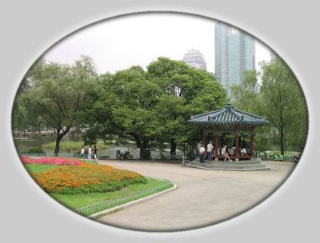

| Корея с высоты суркового полёта | |
|
 |
| Новости | Все новости... |
|
[23.09.2003] Сказка про возвращение на историческую родину. :-)
[25.08.2003] Сайт временно прекращает свою работу по причине встречи автора с благодарными читателями на исторической родине. :-) [25.08.2003] Наконец-то! Историческая встреча!!! Сурок и море! :-) [12.08.2003] Рассказ о ночном походе на остров Ёыйдо, четыре новые панорамы и свежие фотографии! [05.08.2003] Небольшой рассказ про корейские имена и фамилии [01.08.2003] К выходу женской части посетителей из отпусков - новые фоторецепты: гу лао жоу и почти тансуюк [01.08.2003] А вчера мы сделали много новых красивых фотографий! Советую заглянуть. :-) [24.07.2003] Свежие фотографии и панорама ледового катка в Lotte World'е [11.07.2003] Уже давно лето, а я вот только сделала новый вариант фотографии для главной страницы 8-) [05.07.2003] Давно, давно у меня спрашивают, как идёт изучение корейского языка... Наконец-то отвечаю: вяло :-) | |
Всё содержимое данного сайта является моим личным мнением и может не совпадать с мнениями корейцев и(или) Глеба.
| (c) Surok, mysurok@gmail.com |